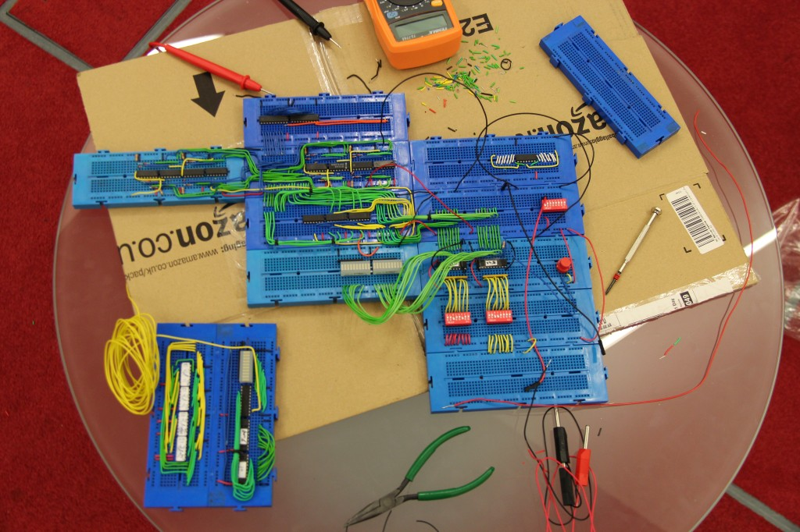

This little project is about us building a CPU. Yes, you read that right, we are building a fully-fledged CPU out of regular TTL. Well, yes, it will never be an i3, but we can still make it add 2 numbers. Actually, the plan is to make it run Pong. I've started working on this project with Sam Heather and Charlie Ford in 2012. I'm still working on, every once in a while.

So we have to go through everything: decoder, ALU, memory management, instruction design, video buffers, controllers and what not.
Yes, I know, it’s crazy, that’s what we first thought, too. Especially when you think we have no previous experience with such a thing. But when we revisited the idea, it seemed like an ideal situation to learn from: you have a problem, you have some tools and big brain you can use.
The plan is to publish our learning experience as a videolog and document each step on our blogs, and, hopefully this will serve as a good reference for you to start your own research in this field.